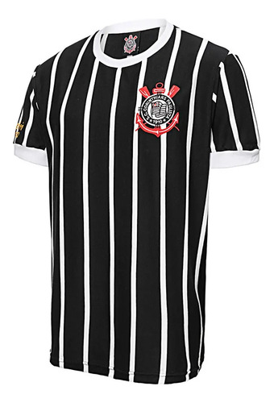
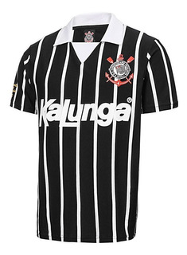
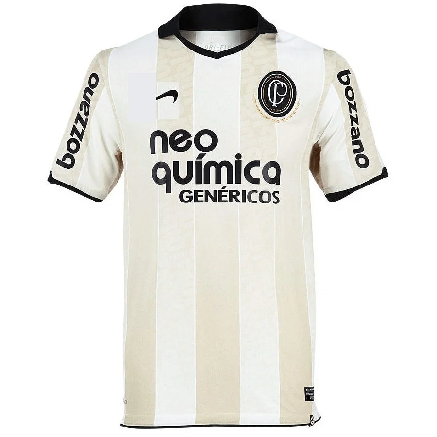
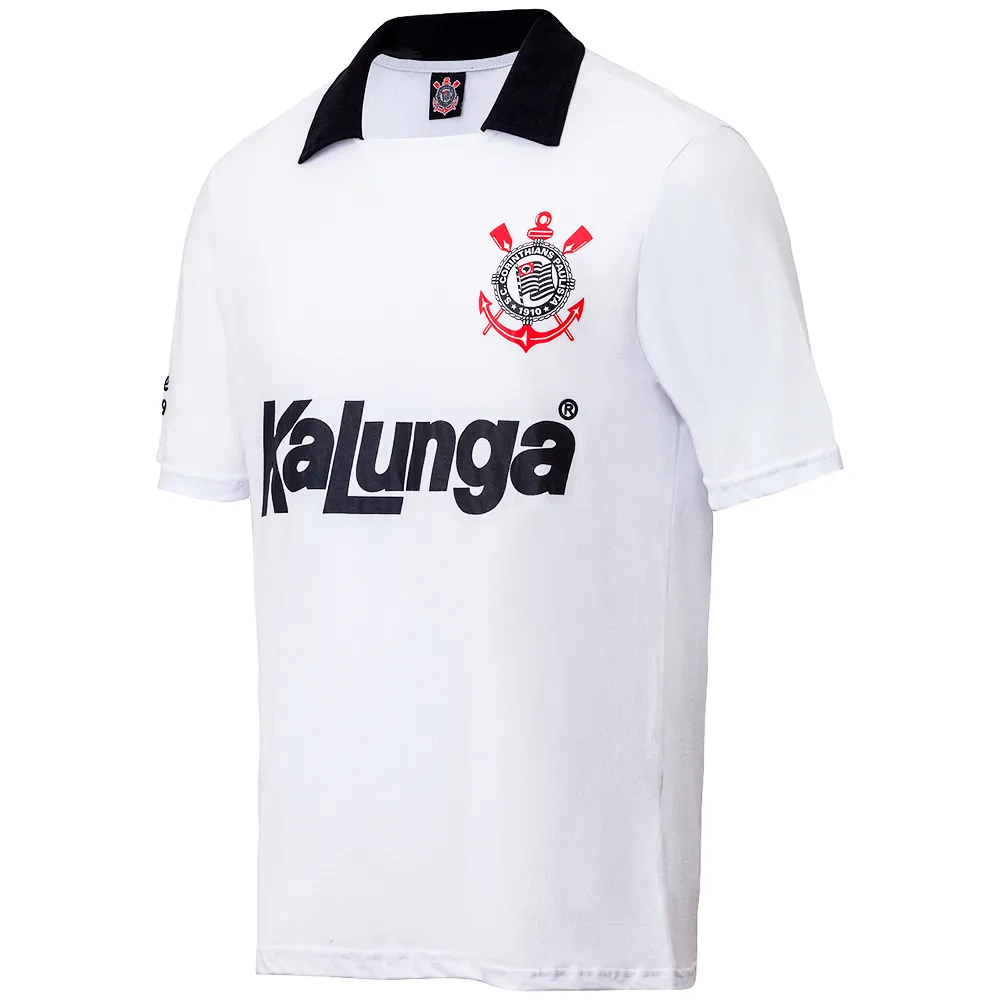
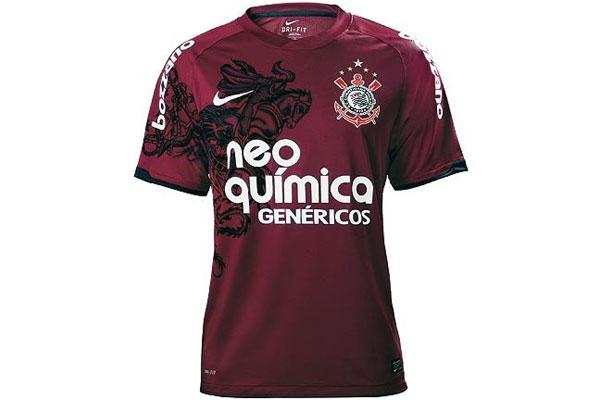
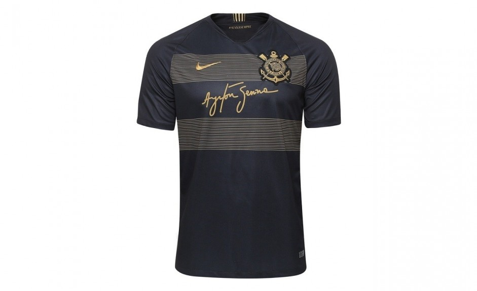

Mantos do Timão
Um dos maiores clubes sul-americanos, o Corinthians presenteou os seus fãs com bonitas camisas ao longo de sua rica história. Sabendo disso, os torcedores votaram nas 10 peças mais belas de todos os tempos. Confira como ficou o ranking!
- Democracia Corinthiana - 1982
- Listrada da Kalunga - 1990
- Centenário - 2010
- Campeão Brasileiro - 1990
- Homenagem ao Torino - 2011
- Camisa ||| - 2018
A Democracia Corinthiana foi um movimento dos anos 1980 em que o Corinthians defendia a democracia e incentivava a participação política no Brasil. Liderado por Sócrates dentro de campo e com ações inovadoras de marketing de Washington Oliveto, o clube marcou época no futebol e na sociedade brasileira..

Quando falamos em 1990, o corinthiano lembra com certeza de 3 (três) coisas: o título, a camisa branca e a camisa preta listrada.

No ano do centenário, o Corinthians lançou uma camisa bege inspirada na primeira cor da história do clube, depois trocada pelo branco por desbotar facilmente. O uniforme ficou marcante também por ter sido usado por Ronaldo Nazário.

O ano de 1990 trouxe não só o primeiro título nacional do Corinthians, como também essa linda camisa à quarta colocação do ranking.

Em 1949, o Corinthians usou uma camisa grená em homenagem ao Torino FC, após o acidente aéreo que matou jogadores, comissão técnica e jornalistas do clube. Em 2011, o Timão relembrou essa história ao lançar um uniforme inspirado na homenagem.

Em parceria com o Instituto Ayrton Senna, a coleção é inspirada nas cores da Lotus, escuderia pela qual Ayrton correu nos anos de 1985 e 1986 e que é considerado um dos carros mais bonitos da história da F-1
